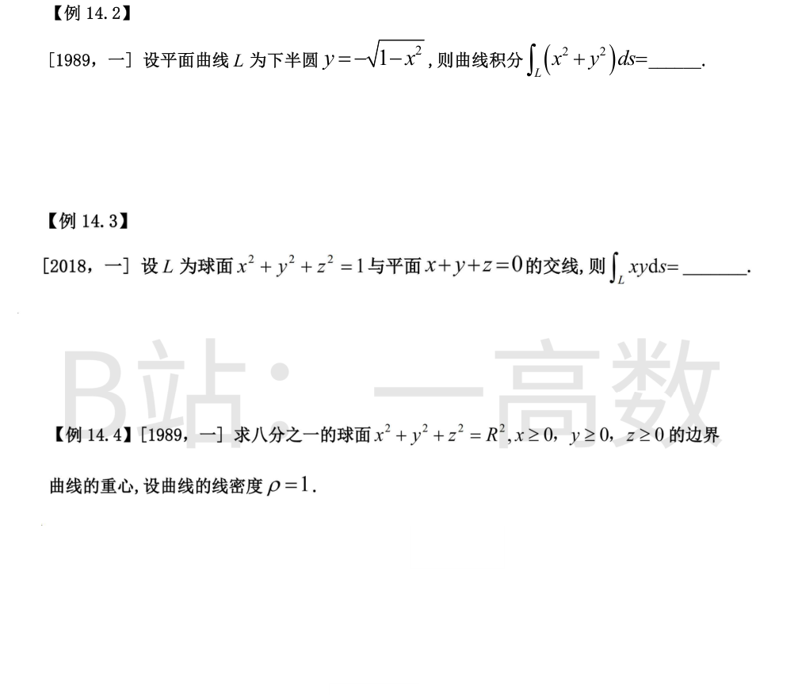
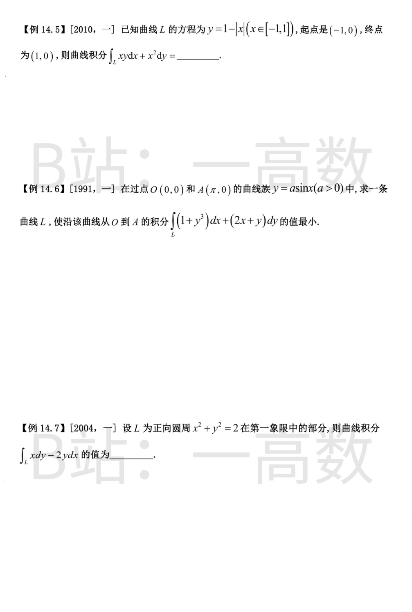
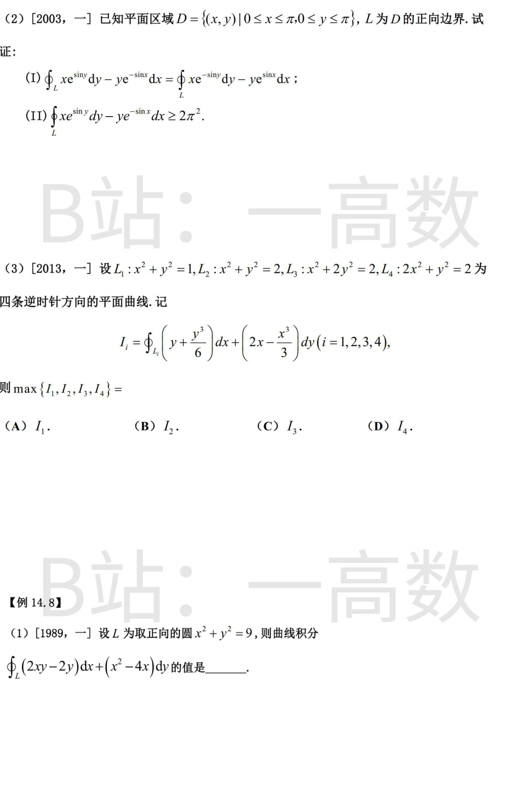
在 L 上恒有 x^2+y^2=1，被积函数可整体代入曲线方程：
$$\int_L (x^2+y^2)\,ds=\int_L 1\cdot ds=s(L).$$
L 是单位圆的下半圆周，弧长 s(L)=\frac{1}{2}\cdot 2\pi=\pi，故原积分 =\pi。
平面过球心，故 L 是半径 1 的大圆，周长 2\pi。
取平面内单位正交基 e_1=\frac{1}{\sqrt{2}}(1,-1,0),\ e_2=\frac{1}{\sqrt{6}}(1,1,-2)，则 L 可参数化为
$$(x,y,z)=\cos\theta\, e_1+\sin\theta\, e_2,\quad \theta\in[0,2\pi),$$
即 x=\frac{\cos\theta}{\sqrt{2}}+\frac{\sin\theta}{\sqrt{6}},\quad y=-\frac{\cos\theta}{\sqrt{2}}+\frac{\sin\theta}{\sqrt{6}}。
于是
$$xy=\left(\frac{\sin\theta}{\sqrt{6}}+\frac{\cos\theta}{\sqrt{2}}\right)\left(\frac{\sin\theta}{\sqrt{6}}-\frac{\cos\theta}{\sqrt{2}}\right)=\frac{\sin^2\theta}{6}-\frac{\cos^2\theta}{2},$$
$$\int_L xy\,ds=\int_0^{2\pi}\left(\frac{\sin^2\theta}{6}-\frac{\cos^2\theta}{2}\right)d\theta=\frac{\pi}{6}-\frac{\pi}{2}=-\frac{\pi}{3}.$$
（对称性备用法：\int_L x^2ds=\int_L y^2ds=\int_L z^2ds=\frac13\int_L(x^2+y^2+z^2)ds=\frac{2\pi}{3}。）
边界由三段第一卦限内的四分之一圆弧组成：
C_1（z=0）：x^2+y^2=R^2（x,y\ge0）；C_2（x=0）：y^2+z^2=R^2；C_3（y=0）：x^2+z^2=R^2。
每段弧长 \frac{\pi R}{2}，总长 s=\frac{3\pi R}{2}。由对称性 \bar{x}=\bar{y}=\bar{z}。
计算 \int x\,ds：C_1 上 x=R\cos t,\ y=R\sin t,\ ds=R\,dt，
$$\int_{C_1}x\,ds=\int_0^{\pi/2}R\cos t\cdot R\,dt=R^2;$$
C_3 上同理为 R^2；C_2 上 x=0，积分为 0。故 \int_{\partial}x\,ds=2R^2，
$$\bar{x}=\frac{2R^2}{3\pi R/2}=\frac{4R}{3\pi}.$$
重心为 \left(\dfrac{4R}{3\pi},\dfrac{4R}{3\pi},\dfrac{4R}{3\pi}\right)。
分段计算。(-1,0)\to(0,1)：y=1+x,\ dy=dx；(0,1)\to(1,0)：y=1-x,\ dy=-dx。
$$\int_L xy\,dx=\int_{-1}^{0}x(1+x)\,dx+\int_0^{1}x(1-x)\,dx=\left[-\frac16\right]+\left[\frac16\right]=0,$$
$$\int_L x^2\,dy=\int_{-1}^{0}x^2\,dx+\int_0^1 x^2(-dx)=\frac13-\frac13=0.$$
故原积分 =0。
（验证：补 x 轴上 (1,0)\to(-1,0) 段，闭路为顺时针方向，格林公式给出 \oint=-\iint_D x\,d\sigma=0（三角形区域关于 x=0 对称），而 x 轴段上 y=0,\ dy=0 积分为 0，一致。）
沿 y=a\sin x（0\le x\le\pi），dy=a\cos x\,dx：
$$I(a)=\int_0^{\pi}\left(1+a^3\sin^3x\right)dx+\int_0^{\pi}\left(2x+a\sin x\right)a\cos x\,dx.$$
逐项计算：\int_0^{\pi}dx=\pi；\int_0^{\pi}\sin^3x\,dx=\frac43；
$$\int_0^{\pi}2ax\cos x\,dx=2a\left[x\sin x+\cos x\right]_0^{\pi}=2a(-1-1)=-4a;\qquad \int_0^{\pi}a^2\sin x\cos x\,dx=\frac{a^2}{2}\sin^2x\Big|_0^{\pi}=0.$$
故 I(a)=\pi+\frac43a^3-4a。令 I'(a)=4a^2-4=0 得 a=1（a>0），且 I''(a)=8a>0，故 a=1 为最小值点。
所求曲线：y=\sin x，最小值 I(1)=\pi+\frac43-4=\pi-\frac83。
L 为 x^2+y^2=2 在第一象限的弧，正向即从 (\sqrt2,0) 到 (0,\sqrt2)。补 y 轴段 (0,\sqrt2)\to(0,0) 与 x 轴段 (0,0)\to(\sqrt2,0)，构成四分之一圆盘 D 的正向边界。
P=-2y,\ Q=x，\frac{\partial Q}{\partial x}-\frac{\partial P}{\partial y}=1-(-2)=3，
$$\oint=3\iint_D d\sigma=3\cdot\frac{\pi(\sqrt2)^2}{4}=\frac{3\pi}{2}.$$
补出的两段上：y 轴段 x=0,\ dx=0；x 轴段 y=0,\ dy=0，被积式 x\,dy-2y\,dx 均为 0。
故 \int_L x\,dy-2y\,dx=\frac{3\pi}{2}。（直接参数化 x=\sqrt2\cos t,\ y=\sqrt2\sin t,\ t:0\to\frac\pi2：\int_0^{\pi/2}(2\cos^2t+4\sin^2t)dt=\frac{3\pi}{2}，一致。）
(I) 由格林公式（L 为 D 的正向边界）：
$$\oint_L xe^{\sin y}dy-ye^{-\sin x}dx=\iint_D\left(e^{\sin y}+e^{-\sin x}\right)d\sigma,\qquad
\oint_L xe^{-\sin y}dy-ye^{\sin x}dx=\iint_D\left(e^{-\sin y}+e^{\sin x}\right)d\sigma.$$
D 关于直线 y=x 对称，且被积函数连续，交换 x,y 积分不变，故
$$\iint_D e^{\sin y}d\sigma=\iint_D e^{\sin x}d\sigma,\qquad \iint_D e^{-\sin x}d\sigma=\iint_D e^{-\sin y}d\sigma,$$
从而两曲线积分相等。
(II) 利用 (I) 把两式合并：
$$\oint_L xe^{\sin y}dy-ye^{-\sin x}dx=\iint_D\left(e^{\sin x}+e^{-\sin x}\right)d\sigma\ge\iint_D 2\,d\sigma=2\pi^2,$$
最后一步用 e^{u}+e^{-u}\ge 2 及 D 的面积 =\pi^2。
P=y+\frac{y^3}{6},\ Q=2x-\frac{x^3}{3}，\frac{\partial Q}{\partial x}-\frac{\partial P}{\partial y}=2-x^2-\left(1+\frac{y^2}{2}\right)=1-x^2-\frac{y^2}{2}，
$$I_i=\iint_{D_i}\left(1-x^2-\frac{y^2}{2}\right)d\sigma.$$
利用椭圆 \frac{x^2}{a^2}+\frac{y^2}{b^2}\le1 上 \iint x^2d\sigma=\frac{\pi a^3b}{4},\ \iint y^2d\sigma=\frac{\pi ab^3}{4}：
D_1: x^2+y^2\le1：I_1=\pi-\frac\pi4-\frac12\cdot\frac\pi4=\frac{5\pi}{8}\approx1.96；
D_2: x^2+y^2\le2：I_2=2\pi-\pi-\frac{\pi}{2}=\frac{\pi}{2}\approx1.57；
D_3: x^2+2y^2\le2 即 \frac{x^2}{2}+y^2\le1（a=\sqrt2,b=1）：I_3=\sqrt2\pi\left(1-\frac12-\frac18\right)=\frac{3\sqrt2\pi}{8}\approx1.67；
D_4: 2x^2+y^2\le2 即 x^2+\frac{y^2}{2}\le1（a=1,b=\sqrt2）：I_4=\sqrt2\pi\left(1-\frac14-\frac14\right)=\frac{\sqrt2\pi}{2}\approx2.22。
故 \max\{I_1,I_2,I_3,I_4\}=I_4，选 (D)。
P=2xy-2y,\ Q=x^2-4x，\frac{\partial Q}{\partial x}-\frac{\partial P}{\partial y}=(2x-4)-(2x-2)=-2。
$$\oint_L=\iint_{x^2+y^2\le9}(-2)\,d\sigma=-2\cdot \pi\cdot 3^2=-18\pi.$$
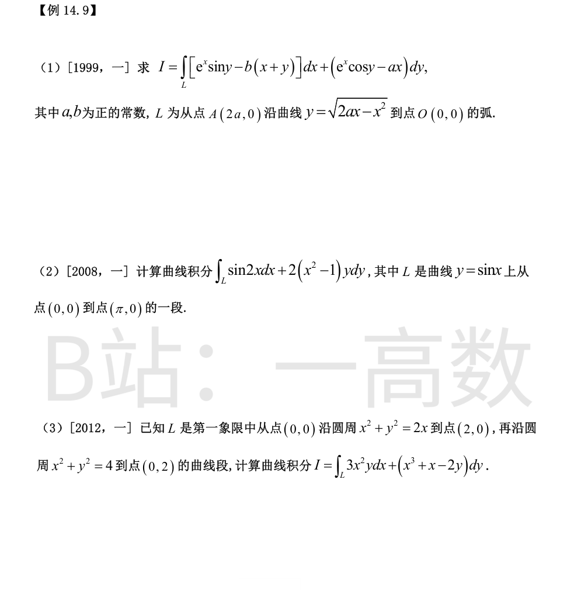
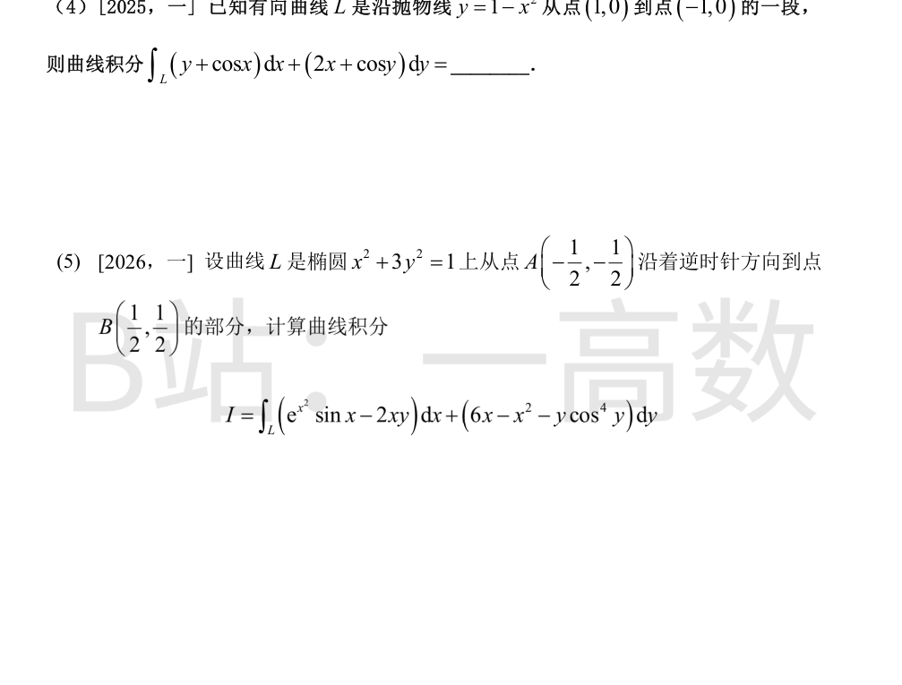
补 x 轴上有向线段 O(0,0)\to A(2a,0)。L：上半圆 (x-a)^2+y^2=a^2 从 A(2a,0) 逆时针（\theta:0\to\pi）到 O(0,0)，与补线构成逆时针闭路，围出上半圆盘 D，面积 \frac{\pi a^2}{2}。
P=e^x\sin y-b(x+y),\ Q=e^x\cos y-ax，\frac{\partial Q}{\partial x}-\frac{\partial P}{\partial y}=(e^x\cos y-a)-(e^x\cos y-b)=b-a，
$$\oint_{\text{闭}}=(b-a)\iint_D d\sigma=(b-a)\cdot\frac{\pi a^2}{2}.$$
补线段上 y=0,\ dy=0：\int_{O}^{A}P\,dx=\int_0^{2a}(-bx)\,dx=-2a^2b。
$$I=\oint_{\text{闭}}-\int_{O}^{A}=\frac{\pi a^2}{2}(b-a)+2a^2b.$$
（核对：e^x\sin y\,dx+e^x\cos y\,dy=d(e^x\sin y) 为全微分，闭路上积分为 0，与旋度计算中 e 项相消一致。）
沿 L：y=\sin x,\ dy=\cos x\,dx,\ x:0\to\pi。
$$\int_L\sin2x\,dx=\int_0^{\pi}\sin2x\,dx=\left[-\frac{\cos2x}{2}\right]_0^{\pi}=0,$$
$$\int_L 2(x^2-1)y\,dy=\int_0^{\pi}2(x^2-1)\sin x\cos x\,dx=\int_0^{\pi}(x^2-1)\sin2x\,dx.$$
其中 \int_0^{\pi}x^2\sin2x\,dx=\left[-\frac{x^2\cos2x}{2}+\frac{x\sin2x}{2}+\frac{\cos2x}{4}\right]_0^{\pi}=\left(-\frac{\pi^2}{2}+\frac14\right)-\frac14=-\frac{\pi^2}{2}，而 \int_0^{\pi}\sin2x\,dx=0。
故原积分 =-\frac{\pi^2}{2}。
被积式拆项：3x^2y\,dx+x^3\,dy=d(x^3y)，-2y\,dy=-d(y^2)，于是
$$I=\int_L d(x^3y)+\int_L x\,dy-\int_L d(y^2)=0+\int_L x\,dy-\left[y^2\right]_{(0,0)}^{(0,2)}=\int_L x\,dy-4,$$
（起终点处 x^3y 均为 0；y^2 由 0 变到 4。）
C_1（小圆 x^2+y^2=2x 的上半弧，(0,0)\to(2,0)）：x=1+\cos s,\ y=\sin s,\ s:\pi\to0，
$$\int_{C_1}x\,dy=\int_{\pi}^{0}(1+\cos s)\cos s\,ds=\underbrace{\int_{\pi}^{0}\cos s\,ds}_{=0}+\int_{\pi}^{0}\cos^2s\,ds=-\frac{\pi}{2}.$$
C_2（大圆 x^2+y^2=4 的四分之一弧，(2,0)\to(0,2)）：x=2\cos t,\ y=2\sin t,\ t:0\to\frac{\pi}{2}，
$$\int_{C_2}x\,dy=\int_0^{\pi/2}4\cos^2t\,dt=4\cdot\frac{\pi}{4}=\pi.$$
故 I=\pi-\frac{\pi}{2}-4=\frac{\pi}{2}-4。
（格林公式验证：补 y 轴段 (0,2)\to(0,0)，闭路取正向，区域 = 四分之一大圆盘挖去小半圆盘，面积 \pi-\frac{\pi}{2}=\frac{\pi}{2}；\frac{\partial Q}{\partial x}-\frac{\partial P}{\partial y}=3x^2+1-3x^2=1；y 轴段上积分 \int_2^0(-2y)dy=4；故 I=\frac{\pi}{2}-4，一致。）
补 x 轴上有向线段 (-1,0)\to(1,0)，与 L（抛物线弧从 (1,0) 到 (-1,0)）构成正向闭路，围出抛物线与 x 轴之间的区域 D。
P=y+\cos x,\ Q=2x+\cos y，\frac{\partial Q}{\partial x}-\frac{\partial P}{\partial y}=2-1=1，
$$\oint_{\text{闭}}=\iint_D d\sigma=\int_{-1}^{1}(1-x^2)\,dx=2-\frac{2}{3}=\frac{4}{3}.$$
补线段上 y=0,\ dy=0，被积式仅剩 \cos x\,dx：\int_{-1}^{1}\cos x\,dx=2\sin1。
$$I=\frac{4}{3}-2\sin1.$$
（另法核对：\int_L y\,dx+2x\,dy=\int_1^{-1}(1-x^2)dx+2\int_1^{-1}x(-2x)dx=-\frac43+\frac83=\frac43；\int_L\cos x\,dx+\cos y\,dy=-2\sin1+[\sin y]_{y:0\to0}= -2\sin1；合计一致。）
P=e^{x^2}\sin x-2xy,\ Q=6x-x^2-y\cos^4y，\frac{\partial Q}{\partial x}-\frac{\partial P}{\partial y}=(6-2x)-(-2x)=6。
A\left(-\frac12,-\frac12\right),\ B\left(\frac12,\frac12\right) 均在直线 y=x 上，该弦过椭圆中心。作弦 B\to A 闭路：椭圆弧（从 A 起逆时针，经最低点 \left(0,-\frac{1}{\sqrt3}\right) 与右顶点 (1,0) 到 B）加弦 B\to A，构成所围下半椭圆区域 R 的正向边界。
$$\oint_{\text{闭}}=\iint_R 6\,d\sigma=6\cdot\frac12\cdot\frac{\pi}{\sqrt3}=\sqrt3\pi$$
（椭圆 x^2+3y^2=1 的面积 =\pi\cdot1\cdot\frac{1}{\sqrt3}=\frac{\pi}{\sqrt3}，R 为其一半）。
弦 B\to A 上取 y=x,\ dy=dx,\ x:\frac12\to-\frac12，被积式化为
$$\left(e^{x^2}\sin x+6x-3x^2-x\cos^4x\right)dx,$$
其中 e^{x^2}\sin x、6x、x\cos^4x 均为奇函数，在对称区间上积分为 0，仅剩
$$-3\int_{1/2}^{-1/2}x^2dx=-3\left[\frac{x^3}{3}\right]_{1/2}^{-1/2}=-3\cdot\left(-\frac{1}{12}\right)=\frac14.$$
$$I=\oint_{\text{闭}}-\int_{\text{弦}}=\sqrt3\pi-\frac14.$$
注：2026 年新题暂无标准答案可对照；闭路正向、半椭圆面积与奇函数消项均已逐步核验。
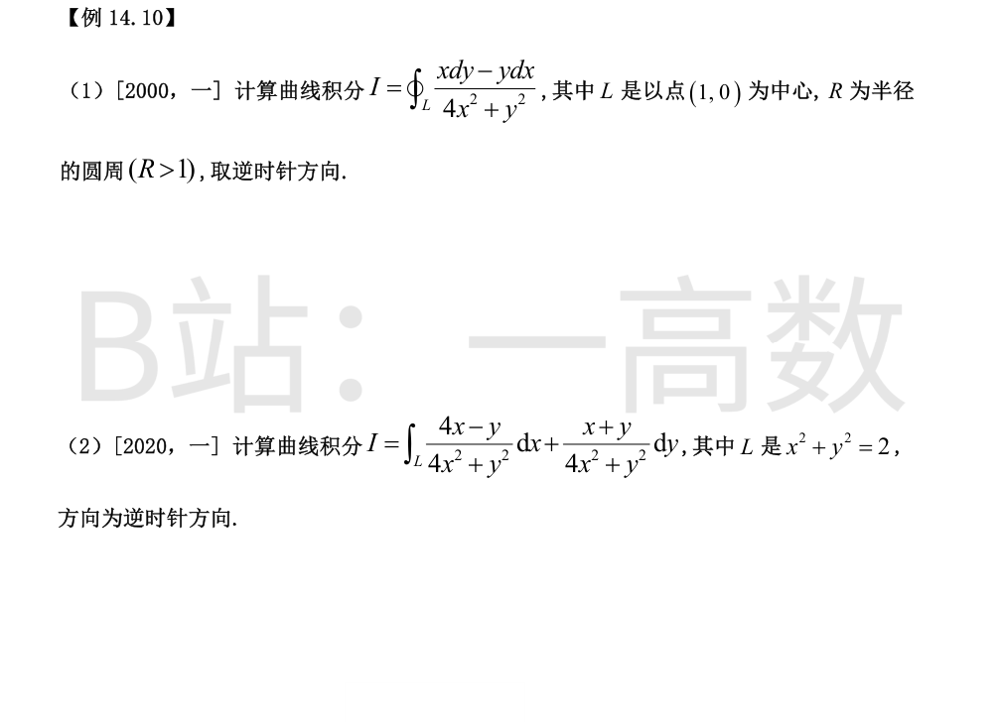
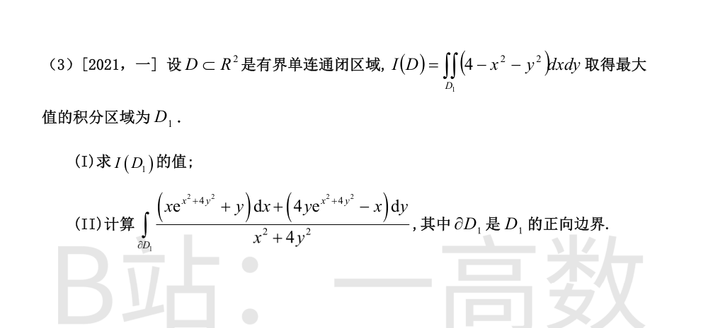
P=\frac{-y}{4x^2+y^2},\ Q=\frac{x}{4x^2+y^2}。在原点以外直接求导：
$$\frac{\partial Q}{\partial x}=\frac{(4x^2+y^2)-8x^2}{(4x^2+y^2)^2}=\frac{y^2-4x^2}{(4x^2+y^2)^2}=\frac{\partial P}{\partial y}.$$
因 R>1，原点在 L 内部，挖去小椭圆 C:4x^2+y^2=\varepsilon^2（逆时针，\varepsilon 足够小），在 L 与 C 之间的复连通区域上用格林公式得 I=\oint_C 同积。
C 上分母恒为 \varepsilon^2，参数化 x=\frac{\varepsilon}{2}\cos t,\ y=\varepsilon\sin t,\ dx=-\frac{\varepsilon}{2}\sin t\,dt,\ dy=\varepsilon\cos t\,dt：
$$x\,dy-y\,dx=\frac{\varepsilon^2}{2}\cos^2t\,dt+\frac{\varepsilon^2}{2}\sin^2t\,dt=\frac{\varepsilon^2}{2}dt,$$
$$I=\int_0^{2\pi}\frac{\varepsilon^2/2}{\varepsilon^2}\,dt=\pi.$$
记 D=4x^2+y^2。原点以外：
$$\frac{\partial Q}{\partial x}-\frac{\partial P}{\partial y}=\frac{D-8x(x+y)}{D^2}-\frac{-D+2y(4x-y)}{D^2}=\frac{2D-8x^2-8xy+8xy-2y^2}{D^2}=\frac{2D-8x^2-2y^2}{D^2}=0.$$
原点在 L 内部，取小椭圆 C:4x^2+y^2=\varepsilon^2（逆时针），则 I=\oint_C。
C 上 D=\varepsilon^2，参数化 x=\frac{\varepsilon}{2}\cos t,\ y=\varepsilon\sin t,\ dx=-\frac{\varepsilon}{2}\sin t\,dt,\ dy=\varepsilon\cos t\,dt：
$$(4x-y)dx+(x+y)dy=\varepsilon^2\left[-\cos t\sin t+\frac{\sin^2t}{2}+\frac{\cos^2t}{2}+\sin t\cos t\right]dt=\frac{\varepsilon^2}{2}dt,$$
$$I=\int_0^{2\pi}\frac{\varepsilon^2/2}{\varepsilon^2}\,dt=\pi.$$
(I) 被积函数 4-x^2-y^2 在圆盘 x^2+y^2<4 内为正、其外为负，要使积分最大须取
$$D_1=\{(x,y)\mid x^2+y^2\le4\}.$$
$$I(D_1)=\int_0^{2\pi}d\theta\int_0^2(4-r^2)r\,dr=2\pi\left[2r^2-\frac{r^4}{4}\right]_0^2=2\pi(8-4)=8\pi.$$
(II) 记 E=x^2+4y^2，分母恰为 E。把被积式拆成两部分：
$$\omega=\frac{xe^{E}dx+4ye^{E}dy}{E}+\frac{y\,dx-x\,dy}{E}.$$
第一部分（e 部分）：由 \frac{d}{dE}\left(\frac{e^E}{E}\right)=\frac{e^E(E-1)}{E^2} 及 E_x=2x,\ E_y=4y，
$$\frac{\partial}{\partial x}\left(\frac{4ye^{E}}{E}\right)=\frac{8xy\,e^{E}(E-1)}{E^2}=\frac{\partial}{\partial y}\left(\frac{xe^{E}}{E}\right);$$
第二部分：\frac{\partial}{\partial x}\left(\frac{-x}{E}\right)=\frac{2x^2-E}{E^2},\ \frac{\partial}{\partial y}\left(\frac{y}{E}\right)=\frac{E-8y^2}{E^2}，二者之差 =\frac{2x^2+8y^2-2E}{E^2}=0。
故 \omega 在原点以外旋度恒为零。原点位于 D_1 内部，取小椭圆 C:x^2+4y^2=\varepsilon^2（逆时针），则 \int_{\partial D_1}\omega=\oint_C\omega。
C 上 E=\varepsilon^2，参数化 x=\varepsilon\cos t,\ y=\frac{\varepsilon}{2}\sin t,\ dx=-\varepsilon\sin t\,dt,\ dy=\frac{\varepsilon}{2}\cos t\,dt：
e 项：xe^{E}dx+4ye^{E}dy=\varepsilon^2 e^{\varepsilon^2}(-\cos t\sin t+\sin t\cos t)dt=0；
(y\,dx-x\,dy) 项：\frac{\varepsilon}{2}\sin t\cdot(-\varepsilon\sin t)dt-\varepsilon\cos t\cdot\frac{\varepsilon}{2}\cos t\,dt=-\frac{\varepsilon^2}{2}dt。
$$\int_{\partial D_1}\omega=\int_0^{2\pi}\frac{-\varepsilon^2/2}{\varepsilon^2}\,dt=-\pi.$$
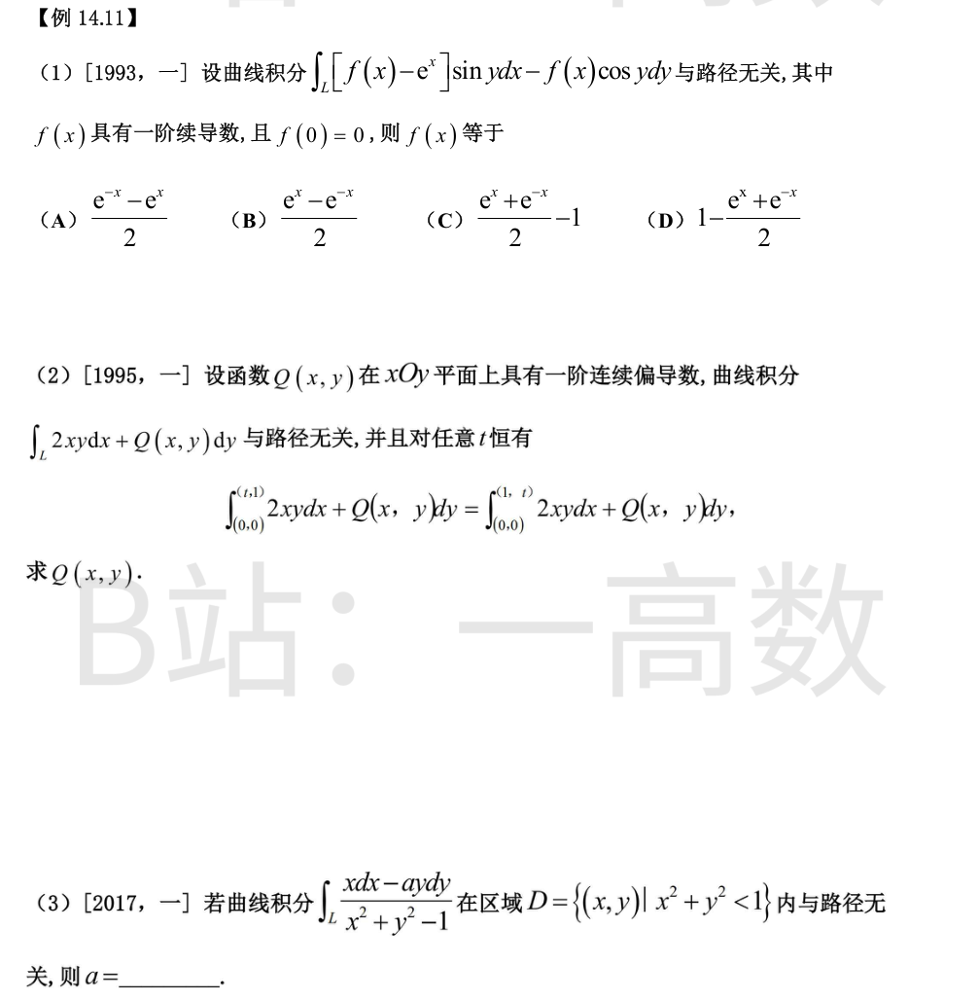
P=[f(x)-e^x]\sin y,\ Q=-f(x)\cos y。在单连通全平面上与路径无关 \Leftrightarrow \frac{\partial P}{\partial y}=\frac{\partial Q}{\partial x}：
$$[f(x)-e^x]\cos y=-f'(x)\cos y\ \Rightarrow\ f'(x)+f(x)=e^x.$$
两边乘 e^x：\left(f(x)e^x\right)'=e^{2x}，积分得 f(x)e^x=\frac{e^{2x}}{2}+C，即 f(x)=\frac{e^x}{2}+Ce^{-x}。
由 f(0)=0：\frac12+C=0，C=-\frac12。故 f(x)=\frac{e^x-e^{-x}}{2}，选 (B)。
与路径无关 \Rightarrow \frac{\partial Q}{\partial x}=\frac{\partial(2xy)}{\partial y}=2x，故 Q=x^2+g(y)。
于是存在原函数 u：u_x=2xy\Rightarrow u=x^2y+h(y)，u_y=x^2+h'(y)=Q。
条件 \int_{(0,0)}^{(t,1)}=\int_{(0,0)}^{(1,t)} 对一切 t 成立，即
$$u(t,1)-u(0,0)=u(1,t)-u(0,0)\ \Rightarrow\ t^2+h(1)=t+h(t).$$
故 h(t)=t^2-t+h(1)，h'(y)=2y-1。
$$Q(x,y)=x^2+2y-1.$$
（验证：u=x^2y+y^2-y 为势函数，u(t,1)=t^2,\ u(1,t)=t+t^2-t=t^2，条件满足。）
P=\frac{x}{x^2+y^2-1},\ Q=\frac{-ay}{x^2+y^2-1}。D 为单连通区域，与路径无关 \Leftrightarrow \frac{\partial P}{\partial y}=\frac{\partial Q}{\partial x}：
$$\frac{\partial P}{\partial y}=\frac{-2xy}{(x^2+y^2-1)^2},\qquad \frac{\partial Q}{\partial x}=\frac{2axy}{(x^2+y^2-1)^2}.$$
恒等比较得 -2=2a，即 a=-1。
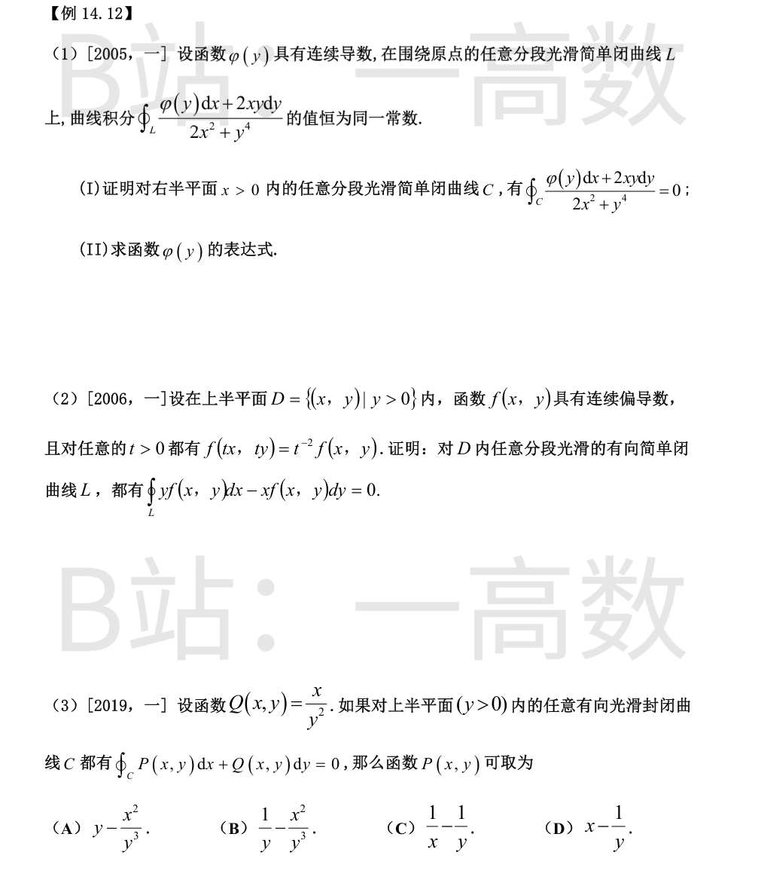
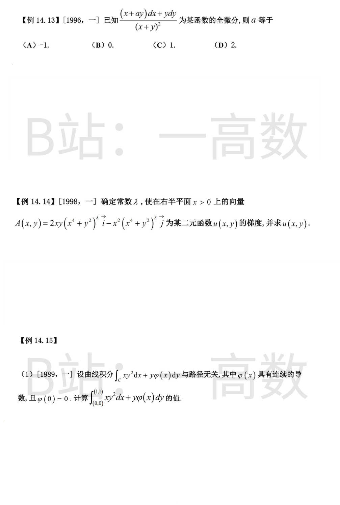
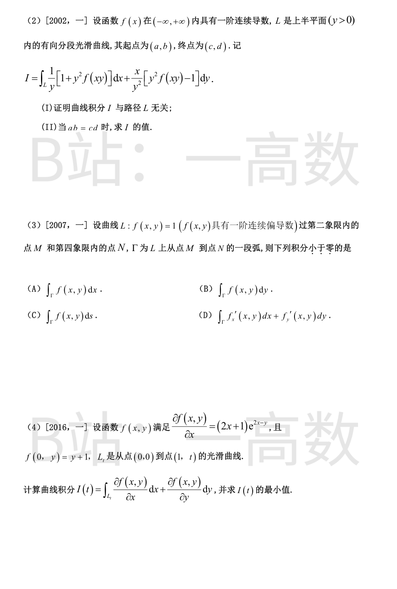
(I) 设 C 为右半平面内任一分段光滑简单闭曲线，因原点不在右半平面，C 不包围原点。在 C 上取两点 A、B，将 C 分成两段弧：C_1（沿 C 从 A 到 B）与 C_2（沿 C 从 B 到 A）。作一条从原点左侧绕过的光滑曲线 l：B\to A，使闭曲线 L_1=C_1+l 与 L_2=C_2^{-1}+l（C_2^{-1} 为 C_2 的反向弧）都包围原点且绕行方向相同。由题设，围绕原点的闭线积分恒为同一常数，故
$$\int_{C_1}+\int_l=\int_{C_2^{-1}}+\int_l\ \Rightarrow\ \int_{C_1}=\int_{C_2^{-1}}=-\int_{C_2},$$
从而
$$\oint_C=\int_{C_1}+\int_{C_2}=0.\qquad\blacksquare$$
(II) 由 (I)，右半平面（单连通）内任意闭曲线积分为零，故积分与路径无关，\frac{\partial P}{\partial y}=\frac{\partial Q}{\partial x}，其中 P=\frac{\varphi(y)}{2x^2+y^4},\ Q=\frac{2xy}{2x^2+y^4}：
$$\frac{\varphi'(y)(2x^2+y^4)-4y^3\varphi(y)}{(2x^2+y^4)^2}=\frac{2y(2x^2+y^4)-8x^2y}{(2x^2+y^4)^2}=\frac{2y^5-4x^2y}{(2x^2+y^4)^2}.$$
比较 x^2 的系数：2\varphi'(y)=-4y\Rightarrow\varphi'(y)=-2y；回代常数项：-2y^5-4y^3\varphi(y)=2y^5\Rightarrow\varphi(y)=-y^2。
验证：\varphi=-y^2 时左端 =-2y\cdot y^4-4y^3(-y^2)=2y^5\ \checkmark。故 \varphi(y)=-y^2。
记 P=yf(x,y),\ Q=-xf(x,y)。只需证 \frac{\partial Q}{\partial x}=\frac{\partial P}{\partial y}，再用格林公式。
$$\frac{\partial Q}{\partial x}-\frac{\partial P}{\partial y}=\left(-f-xf_x'\right)-\left(f+yf_y'\right)=-\left(xf_x'+yf_y'+2f\right).$$
对恒等式 f(tx,ty)=t^{-2}f(x,y) 两边关于 t 求导：
$$xf_x'(tx,ty)+yf_y'(tx,ty)=-2t^{-3}f(x,y),$$
令 t=1 得 xf_x'+yf_y'=-2f，故 \frac{\partial Q}{\partial x}-\frac{\partial P}{\partial y}=0 在 D 内处处成立。
设 L 为 D 内任一有向分段光滑简单闭曲线，围成区域 D_L\subset D（f 在其上有一阶连续偏导数），由格林公式
$$\oint_L yf\,dx-xf\,dy=\iint_{D_L}\left(\frac{\partial Q}{\partial x}-\frac{\partial P}{\partial y}\right)d\sigma=0.\qquad\blacksquare$$
上半平面单连通，对任意闭曲线积分为零等价于 \frac{\partial P}{\partial y}=\frac{\partial Q}{\partial x}=\frac{\partial}{\partial x}\left(\frac{x}{y^2}\right)=\frac{1}{y^2} 在上半平面处处成立，且 P 须在上半平面（含 x=0 的点）有定义。
(A) \frac{\partial}{\partial y}\left(y-\frac{x^2}{y^3}\right)=1+\frac{3x^2}{y^4}，不符；
(B) \frac{\partial}{\partial y}\left(\frac{1}{y}-\frac{x^2}{y^3}\right)=-\frac{1}{y^2}+\frac{3x^2}{y^4}，不符；
(C) \frac{1}{x}-\frac{1}{y} 形式上满足偏导条件，但 1/x 在 x=0（属于上半平面）处无定义，对经过 y 轴的闭曲线积分无意义，不满足"任意闭曲线"的要求；
(D) \frac{\partial}{\partial y}\left(x-\frac{1}{y}\right)=\frac{1}{y^2}=\frac{\partial Q}{\partial x}，且在上半平面处处光滑。选 (D)。
P=\frac{x+ay}{(x+y)^2},\ Q=\frac{y}{(x+y)^2}。全微分充要条件 \frac{\partial P}{\partial y}=\frac{\partial Q}{\partial x}：
$$\frac{\partial P}{\partial y}=\frac{a(x+y)^2-(x+ay)\cdot2(x+y)}{(x+y)^4}=\frac{a(x+y)-2(x+ay)}{(x+y)^3}=\frac{(a-2)x-ay}{(x+y)^3},$$
$$\frac{\partial Q}{\partial x}=\frac{-2y}{(x+y)^3}.$$
恒等比较系数：x 项：a-2=0；y 项：-a=-2。两者均给 a=2，自洽。选 (D)。
右半平面单连通，A 为梯度场 \Leftrightarrow \frac{\partial P}{\partial y}=\frac{\partial Q}{\partial x}，其中 P=2xy(x^4+y^2)^\lambda,\ Q=-x^2(x^4+y^2)^\lambda：
$$P_y=2x(x^4+y^2)^{\lambda-1}\left[(x^4+y^2)+2\lambda y^2\right],$$
$$Q_x=-2x(x^4+y^2)^{\lambda-1}\left[(x^4+y^2)+2\lambda x^4\right].$$
两式相等的充要条件：2(x^4+y^2)+2\lambda(x^4+y^2)=0，故 \lambda=-1。
求 u：u_x=\frac{2xy}{x^4+y^2}。注意到
$$\frac{d}{dx}\arctan\frac{x^2}{y}=\frac{2x/y}{1+x^4/y^2}=\frac{2xy}{x^4+y^2},$$
故 u=\arctan\frac{x^2}{y}+C。验证 u_y=\frac{-x^2/y^2}{1+x^4/y^2}=-\frac{x^2}{x^4+y^2}=Q\ \checkmark。
与路径无关 \Rightarrow \frac{\partial\left(xy^2\right)}{\partial y}=\frac{\partial\left(y\varphi(x)\right)}{\partial x}：2xy=y\varphi'(x)，故 \varphi'(x)=2x；结合 \varphi(0)=0 得 \varphi(x)=x^2。
于是
$$xy^2dx+y\varphi(x)dy=xy^2dx+x^2y\,dy=d\left(\frac{x^2y^2}{2}\right),$$
$$\int_{(0,0)}^{(1,1)}=\frac{x^2y^2}{2}\Big|_{(0,0)}^{(1,1)}=\frac12.$$
(I) 化简 P=\frac{1}{y}+yf(xy),\ Q=xf(xy)-\frac{x}{y^2}：
$$\frac{\partial P}{\partial y}=-\frac{1}{y^2}+f(xy)+xyf'(xy),\qquad \frac{\partial Q}{\partial x}=f(xy)+xyf'(xy)-\frac{1}{y^2},$$
两者相等；上半平面为单连通区域，故 I 与路径无关。
(II) 注意 d\left(\frac{x}{y}\right)=\frac{dx}{y}-\frac{x\,dy}{y^2}，且 y\,dx+x\,dy=d(xy)，故
$$Pdx+Qdy=d\left(\frac{x}{y}\right)+f(xy)\,d(xy)=d\left(\frac{x}{y}+F(xy)\right),\quad F'(u)=f(u).$$
$$I=\left[\frac{x}{y}+F(xy)\right]_{(a,b)}^{(c,d)}=\frac{c}{d}-\frac{a}{b}+F(cd)-F(ab)\xlongequal{ab=cd}\frac{c}{d}-\frac{a}{b}.$$
在 \Gamma 上 f\equiv1，故：
(C) \int_\Gamma f\,ds=\int_\Gamma ds= 弧长 >0；
(D) \int_\Gamma f_x'dx+f_y'dy=\int_\Gamma df=f(N)-f(M)=1-1=0；
(A) \int_\Gamma f\,dx=\int_\Gamma dx=x_N-x_M，M 在第二象限 x_M<0，N 在第四象限 x_N>0，故 >0；
(B) \int_\Gamma f\,dy=\int_\Gamma dy=y_N-y_M，y_M>0,\ y_N<0，故 <0。选 (B)。
由 f_x=(2x+1)e^{2x-y} 关于 x 积分：f(x,y)=xe^{2x-y}+g(y)（因 \frac{\partial}{\partial x}\left[xe^{2x-y}\right]=(2x+1)e^{2x-y}）。
代入 f(0,y)=g(y)=y+1，故 f(x,y)=xe^{2x-y}+y+1。
被积式恰为 df：
$$I(t)=\int_{L_t}f_xdx+f_ydy=f(1,t)-f(0,0)=e^{2-t}+t+1-1=e^{2-t}+t.$$
$$I'(t)=1-e^{2-t}=0\Rightarrow t=2,\qquad I''(t)=e^{2-t}>0,$$
故 I(t) 在 t=2 处取得最小值 I(2)=e^0+2=3。